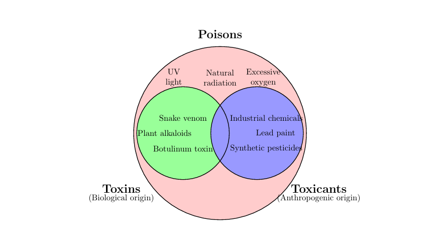
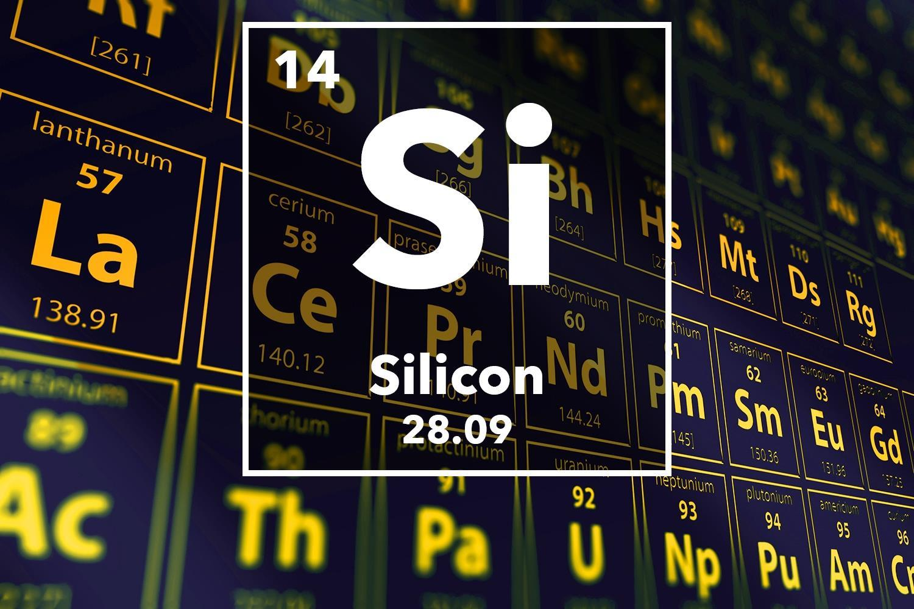
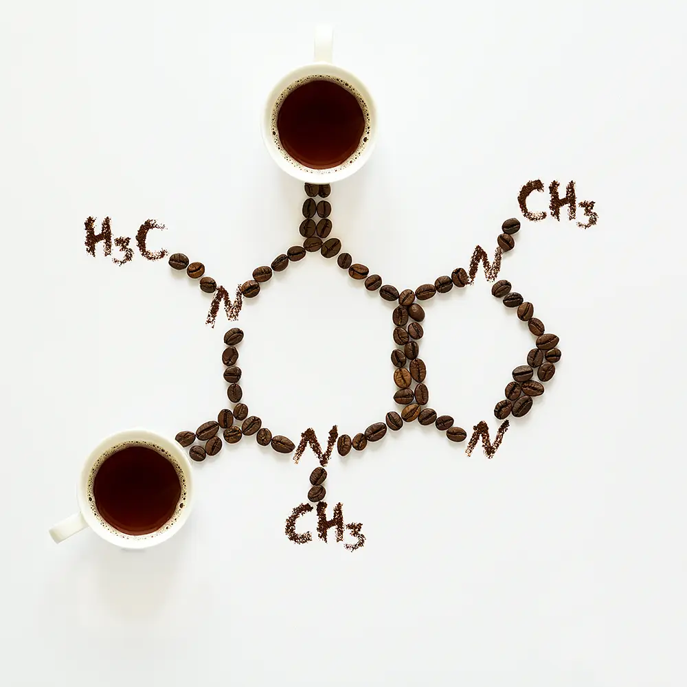

A critical toxicological review focusing on the physiological deposition of toxins and toxicants. Investigated exposure pathways and target organ effects, laying the foundation for Gaurav's current mechanistic investigations in molecular hepatotoxicity.

This biochemical astrobiology study explores silicon-based extraterrestrial life and examines the thermodynamics of silanes replacing hydrocarbons in low-oxygen, high-temperature extreme planetary environments like Venus and Titan.

An interdisciplinary biochemistry review examining how grinding parameters, roast profiles, degassing cycles, water compositions, and milk proteins shape the organic flavor dynamics and extraction kinetics of coffee.